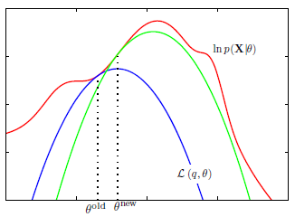

Expectation Maximization¶

An implementation of the EM algorithm for a Gaussian mixture model (GMM) was presented along with Gaussian Mixture Models. In this chapter, a more elaborate theoretical discussion of the EM algorithm is presented with derivations.
Theory¶
The goal of the EM algorithm is to find the MLE for latent variable models. Let \(X\) and \(Z\) denote the set of all observed and latent variables respectively. The set of all model parameters to be determined is denoted by \(\theta\).
The log-likelihood function is given by:
Note however that this term is intractable due to the presence of the summation inside the logarithm even if the joint distribution \(p(X,Z|\theta)\) belongs to the exponential family.
Denote \(q(Z)\) to be any distribution over the hidden variables. The log-likelihood can be expressed as:
Taking the expectation w.r.t \(q(Z)\) on both sides,
Note that the KL divergence on the right hand side is always positive. This implies that the first term on the right hand side is a lower bound to the log-likelihood.
with the equality holding true only when \(KL(q_z\Big|\Big|p(Z|X,\theta)) = 0\) i.e., when \(q_z = p(Z|X,\theta)\).
The EM algorithm is a two-stage iterative optimization technique for finding MLE. In the E step, the lower bound \(\mathcal{L}\Big(q_z,\theta^{old}\Big)\) is maximized w.r.t q_z (leaving \(\theta\) at this current value, hence the \(^{old}\) superscript). This maximum value for the lower bound occurs when \(q_z = p(Z|X,\theta^{old})\).
In the subsequent M step, the distribution \(q_z\) is held fixed at the new value found in the E step, and the lower bound is maximized w.r.t \(\theta\) to get a new estimate \(\theta^{new}\). The algorithm then proceeds to the next iteration using \(\theta^{new}\) and the process repeats till convergence.
Note that each iteration of EM algorithm increases the log-likelihood function. In each E step, $q_z$ is set equal to the posterior distribution for the current parameter values $\theta^{old}$, causing the lower bound to move up to the same value as the log likelihood function, with the KL divergence vanishing. In each M step, $q_Z$ is held fixed and the lower bound $\mathcal{L}(q_z, \theta)$ is maximized with respect to the parameter vector $\theta$ to give a revised value $\theta^{new}$. Because the KL divergence is nonnegative, this causes the log likelihood $\ln{p(X|\theta)$ to increase by at least as much as the lower bound does.
Advantages of EM algorithm¶
Allows handling of missing inputs/outputs.
Generalizes to complex models with discrete and real-values hidden variables.
By attempting to maximize the likelihood, the EM algorithm acts as a Lyapunov function for stable learning.
Facilitate Bayesian extensions to learning.
References¶
[1]: Bishop, Christopher M. 2006. Pattern Recognition and Machine Learning. Springer.
[2]: M. P. Deisenroth, A. A. Faisal, and C. S. Ong, 2021. https://mml-book.com